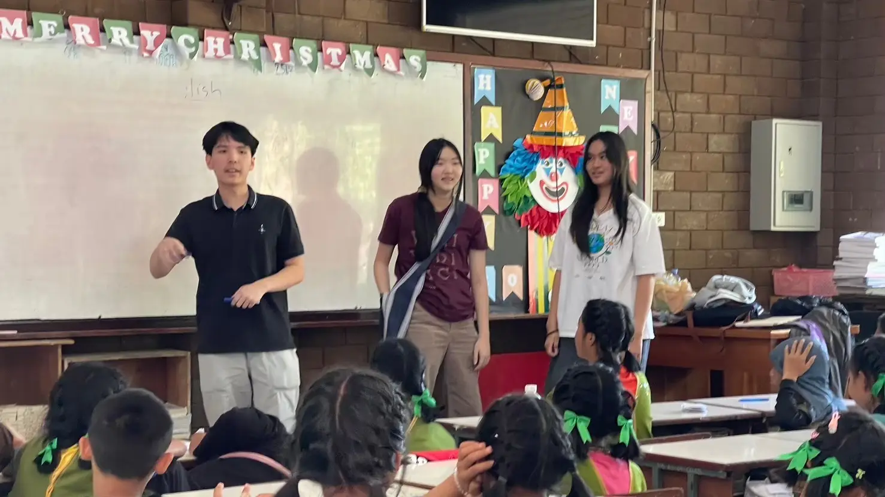
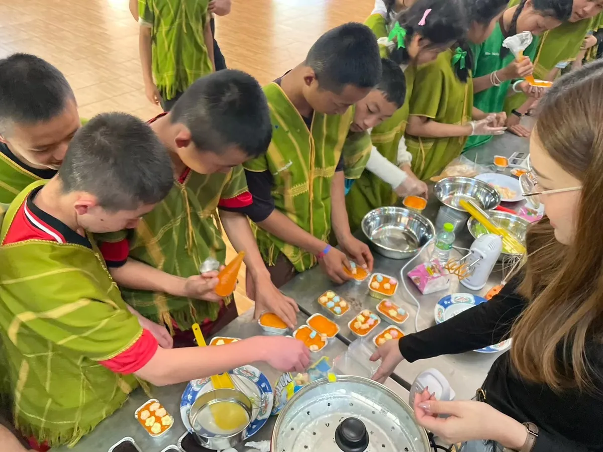
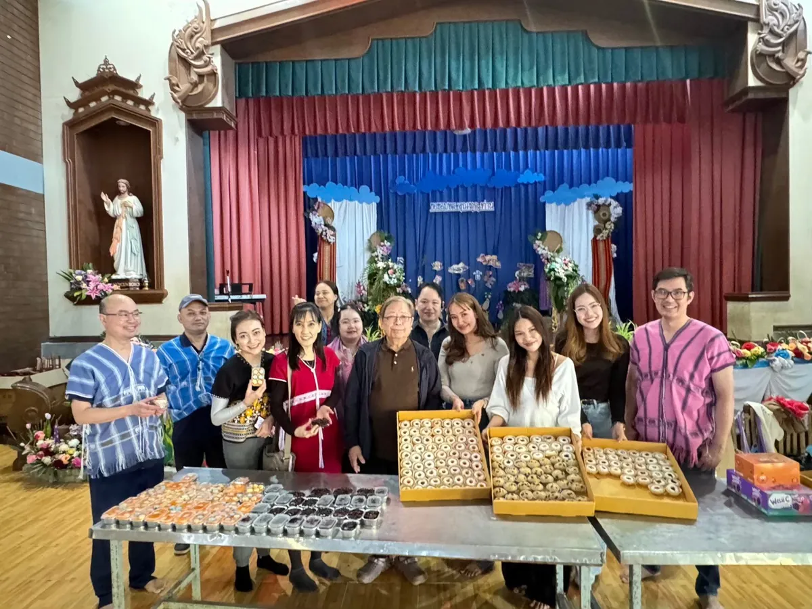

Community Empowerment
About Community Empowerment
Good health also depends on school and a steady income. On our trips to Mae Chaem, MedLink members teach classes and practical skills, and we help highland families sell what they make.
10 photos
Learning Sessions
MedLink members teach Physics and English to children in remote Mae Chaem communities. The sessions run alongside the trips we make with volunteer medical teams and Banphaeo Hospital.
- Since 2025
- [Number of children] children
Vocational Skills: Bakery
We introduced bakery classes so young people learn a practical skill they can use to earn money.
- Since 2025
- [Number of participants] participants


8 photos
Highland Products
Highland families in Mae Chaem make goods such as hand-sewn shirts. MedLink promotes and sells these products so the families earn extra income.
- Since 2025
5 photos
Essentials Drives
We collect and deliver basic supplies to children and families in highland communities: toys and card games, snacks, health supplies, dry food, and other everyday essentials.
- 2024 and 2026
- [Number of families] families
6 photos
Water Resources & Public Health Project
MedLink members take part in a project to improve access to clean water and public health awareness in highland communities.
In 2025, members raised funds for the Doi Water Reservoir Project. That February, they visited a highland village in Mae Chaem with the volunteer team to see its water source and the new water tank.
- Since 2025